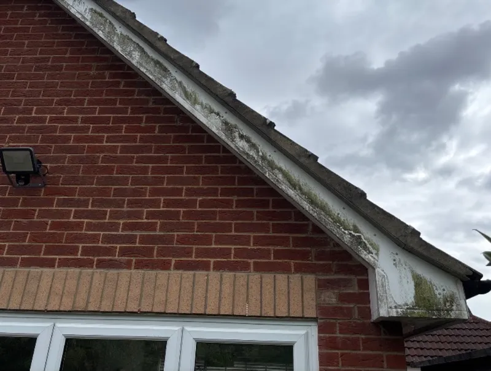

Window cleaning
from £10
Pure water lifts the salt film that builds up on glass near the coast, so windows dry clear instead of streaky.
Window, gutter and fascia cleaning for homes across South Shields, from Westoe and the town centre to Harton, Marsden and Cleadon Park.

Before After
After| NE33 | Town centre, Westoe, Deans and High Shields |
|---|---|
| NE34 | Harton, Horsley Hill, Marsden, Simonside, Brockley Whins and Cleadon Park |
Not sure your postcode is covered, or live just outside it? Call or text 07415 085860 and we'll let you know.
South Shields is a seaside town at the mouth of the Tyne, and the coast shapes the work. Salt in the air settles on glass and frames, and a damp, windy climate encourages green algae on fascias and moss in gutters, especially on north-facing roofs.
The housing is varied too: older terraces and Tyneside flats around the town centre and Westoe, and a great deal of semi-detached housing in the suburbs further out. Whatever you live in, we start with a free quote so you know the price before we begin.
Pick one service or combine them for a complete refresh. Every job starts with a free quote, so you know the price before we begin.
Pure water lifts the salt film that builds up on glass near the coast, so windows dry clear instead of streaky.
Exposed, breezy streets send leaves, roof grit and moss into gutters. We vacuum them clear from the ground.
Sea damp and algae stain fascias and soffits quickly. We wash them back to clean white.
Prices are starting prices. The final cost depends on property size, access and condition.
Yes. We cover all of South Shields, including Westoe, Harton, Marsden, Horsley Hill, Simonside and Cleadon Park, in postcodes NE33 and NE34.
Near the coast, salt in the air leaves a thin film on glass that shows up as smears. Pure water cleaning is good at lifting it, and cleaning before it builds up makes the job easier.
Window cleaning starts from £10, gutter cleaning from £80 and fascia cleaning from £70. The final price depends on the size and type of the property, so we give a free quote first.
Call or text 07415 085860, message us on WhatsApp or email crystalcleanservs@gmail.com with your address and what you need cleaning. Quotes are free.
Tell us what you need cleaning and your address. We'll come back to you with a clear price.
07415 085860